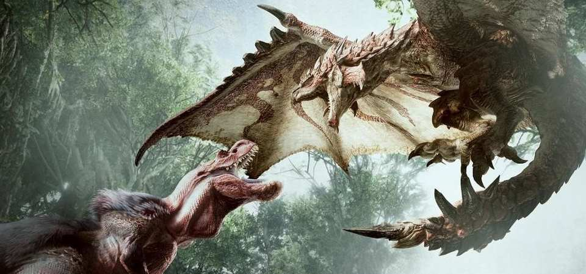

Bienvenido, cazador
Los cazadores en el mundo de Monster Hunter son parte de un gremio de cazadores que se encarga de los problemas ocasionados por los monstruos en toda la región. El personaje llega a una de las numerosas aldeas de la región esperando convertirse en el héroe del lugar mientras va completando las diferentes misiones que le asignan. Los puntos de encuentro del gremio son parte central de la cultura de esta sociedad y al parecer todo parece girar alrededor del estudio y la defensa de los Wyverns, criaturas gigantes que amenazan a los habitantes, cortan rutas comerciales, arruinan cosechas y matan rebaños. El papel del cazador es proteger a los habitantes completando exitosamente fracasos inevitables de las misiones que estos le solicitan y recoger su dinero. Nuestro cazador protagonista debe empezar desde el rango bajo, el más básico, hasta llegar al rango G, donde se encuentran los monstruos más feroces y peligrosos. Para esto debe mejorar tanto su equipamiento como su habilidad, progresando lentamente por el rango bajo y alto hasta llegar al rango G, donde se requiere de una gran habilidad. Disfruta de este maravilloso mundo y
FELIZ CAZA!
